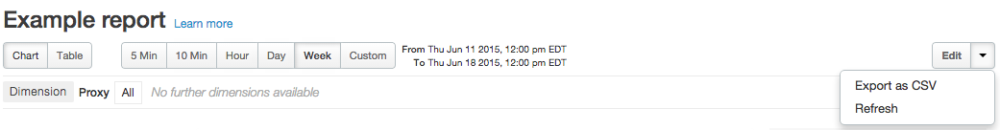

Watch a video to learn how to create custom reports using the new Edge experience UI.
By adding custom reports, you can create a set of charts that provide insight into every aspect of your API program.
With the report visible:
When building a custom report, you can choose from these metrics:
| Metric | Description |
| Average transactions per second | The number of API requests and resulting responses per second. |
| Cache hit | The number of API requests that are serviced from the Apigee cache. The request for the cached data is not forwarded to the backend target. |
| Policy errors | The request is marked as is_Error when it cannot be serviced successfully by a policy. |
| Proxy errors | The request is marked as is_Error when it cannot be serviced successfully by the proxy. |
| Request processing latency | The length of time it takes the proxy to complete an end-to-end transaction. |
| Request size | The size of the request in bytes. |
| Response processing latency | The time it takes for the proxy to process a request measured in milliseconds. |
| Response size | The size of the response in bytes. |
| Target errors | The request is marked as is_Error when it cannot be serviced successfully by the backend target. |
| Target response time |
The time it takes from when a request is sent from to the backend target and when it is received from the backend. See also this interesting article on the Apigee Community site: When can the Average Total Response Time be less than the Average Target Response Time? |
| Total response time |
The total time for an app to receive a response from an API request. This is the sum of the request processing latency of the proxy, request processing latency of the customer endpoint, response generation latency of the customer end point, and the response processing latency of the proxy. It also includes the latency introduced by the network layer as the request and response can go through multiple networks before it reaches its destination. See also this interesting article on the Apigee Community site: When can the Average Total Response Time be less than the Average Target Response Time? |
| Traffic | Also known as throughput. The number of API requests and resulting responses seen by the organization. |
You can select from a large number of custom drilldown dimensions. Drilldown dimensions let you specify which dimensions to measure in your custom report. Apigee Edge Analytics collects data on a wide range of dimensions. And, you can also select any custom dimensions that have been created in your organization. See http://docs.apigee.com/node/8409.
When you've completed building your custom report, the data is populated immediately. The graph is defaulted to plot the first metric you chose for the tab in your custom report. If you want to see different metrics, or compare them against each other, follow these steps:
You also have the option to delete a report by clicking the Delete button.
You can export a saved custom report to CSV (comma-separated value) format. Each report includes an export menu item to start the export.
